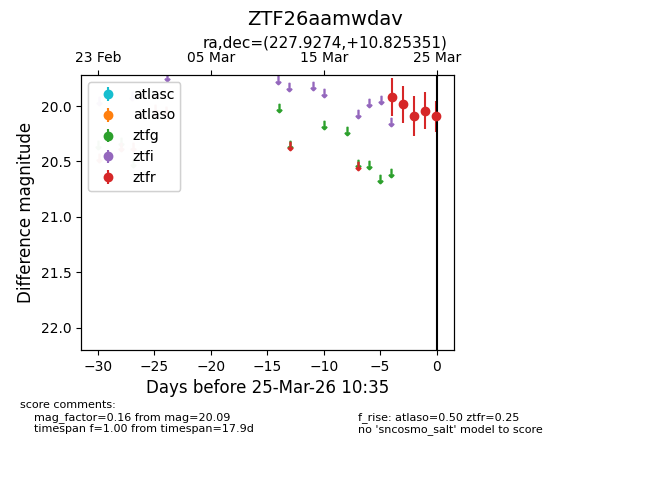
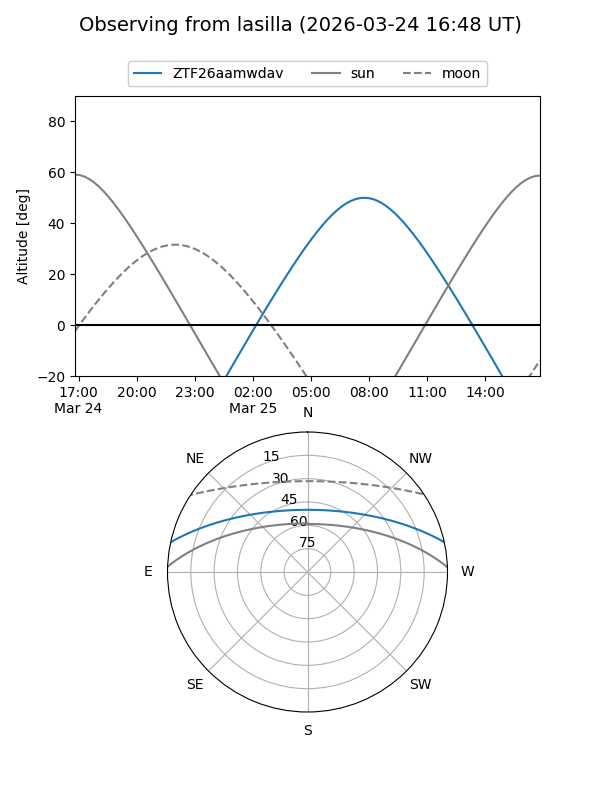
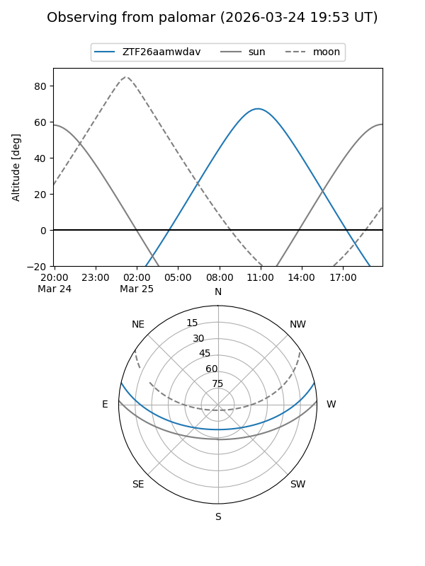
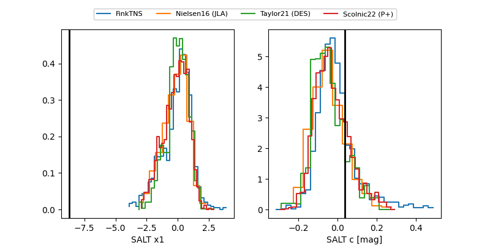

ZTF26aamwdav
Target ZTF26aamwdav at 2026-03-25 10:38
Aliases and brokers:
FINK: link
Lasair: link
ALeRCE: link
alt names
ZTF26aamwdav (ztf,fink_ztf)
Coordinates:
equatorial (ra, dec) = 227.9274,+10.82535
equatorial (HMS+DMS) = 15:11:42.58,+10:49:31.26
galactic (l, b) = (13.4701,+53.23601)
Flags:
Photometry:
last atlaso=nan, ztfr=20.09
1 atlaso, 5 ztfr detections
Lightcurve

Visibility


Additional plots
